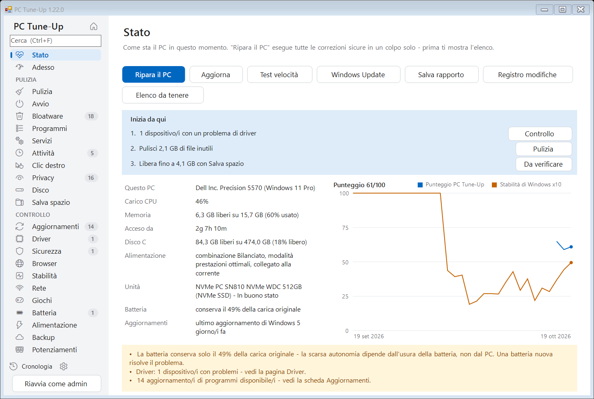
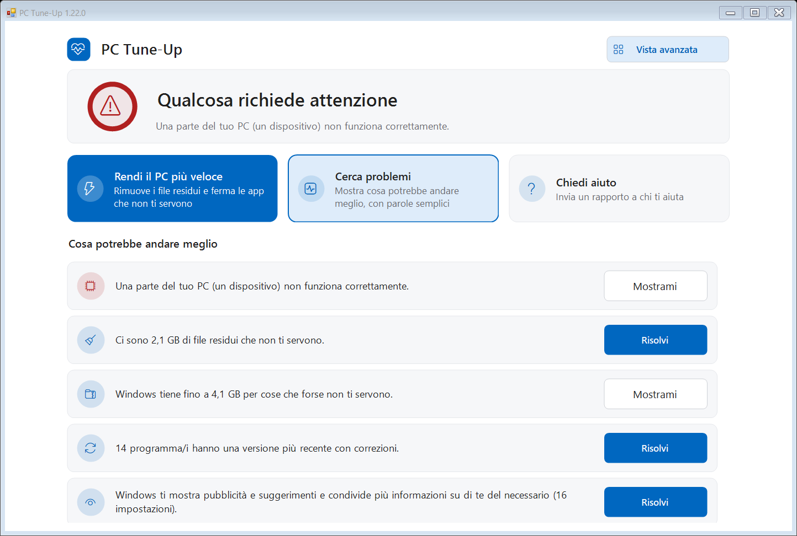
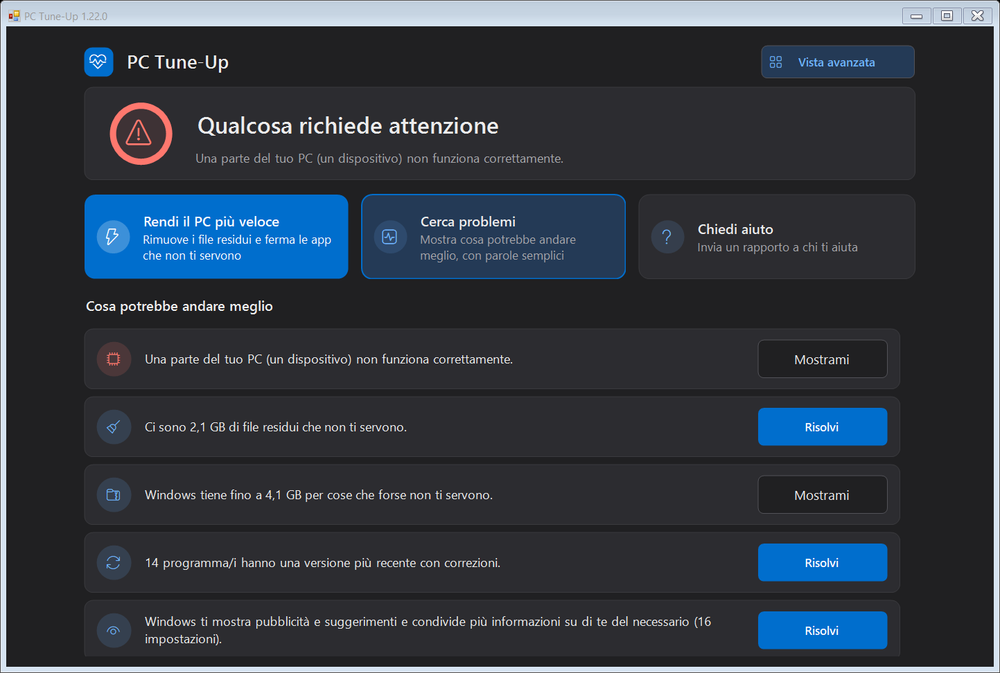
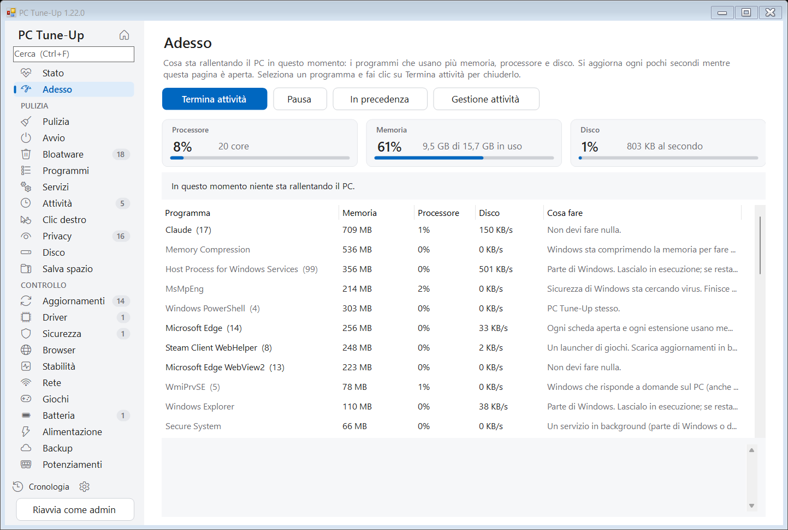
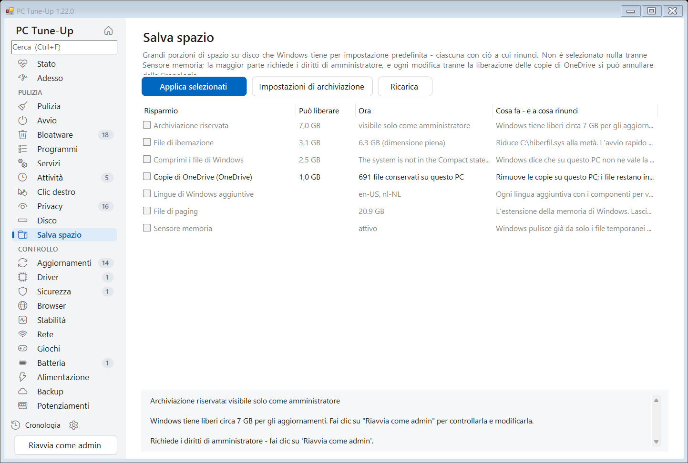
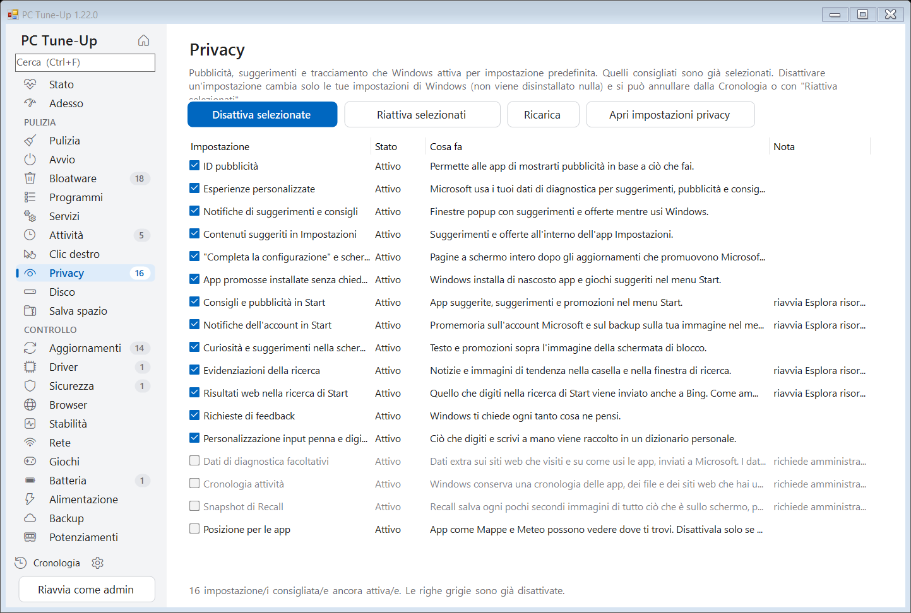
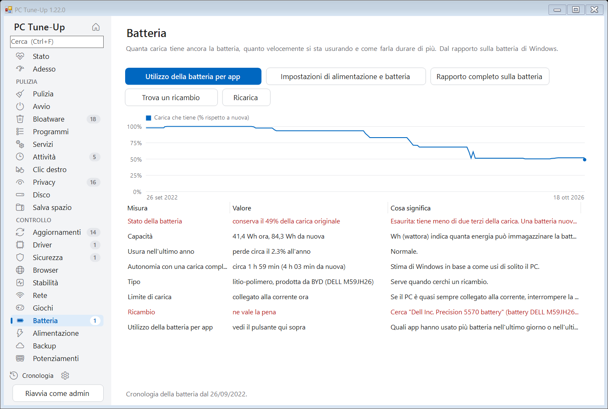
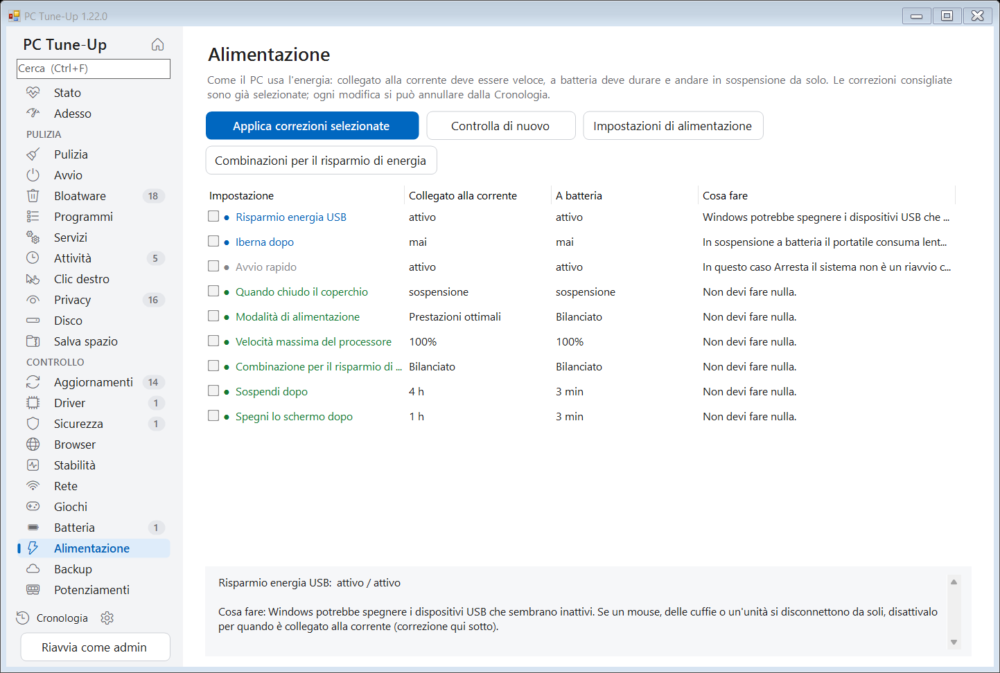
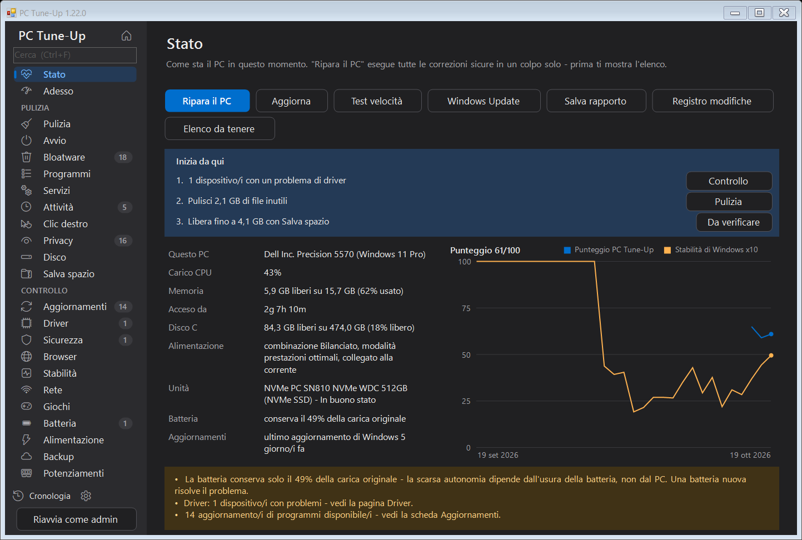

Controlla, pulisci e velocizza qualsiasi PC Windows.
PC Tune-Up trova cosa rallenta il tuo PC, te lo spiega in parole semplici e lo risolve con un clic - e ogni modifica si può annullare.
Gratuito e open source (MIT). Windows 10 e 11. In italiano, inglese, olandese, tedesco, francese, spagnolo e polacco. Nessun account, nessuna pubblicità.

Tutto in un unico posto
Quello che controllerebbe un tecnico, in 25 pagine in cui puoi cercare con Ctrl+F - e un riquadro "Inizia da qui" che ti dice quali sono le tre cose più importanti adesso.
File inutili e spazio
File temporanei, dump di arresto anomalo, cache dei browser e residui di Windows. File di grandi dimensioni e duplicati. Modi per recuperare spazio, come il file di ibernazione e le copie di OneDrive.
Avvio e bloatware
App che partono con Windows, software inutile preinstallato da qualsiasi produttore, programmi che non usi, servizi in background e attività pianificate.
Privacy e menu
Pubblicità, suggerimenti e tracciamento di Windows disattivati uno per uno. Voci rimaste nel menu del tasto destro nascoste.
Adesso
Cosa sta rallentando il PC in questo preciso momento: processore, memoria e disco, i programmi che li usano spiegati in parole semplici, e Termina attività per chiuderne uno - più quanto è stata piena la memoria negli ultimi 7 giorni.
Aggiornamenti e driver
Programmi obsoleti aggiornati tramite winget, dispositivi con problemi di driver e quanto sono vecchi i driver importanti.
Sicurezza e browser
Supporto di Windows, antivirus, firewall, crittografia, Secure Boot - e estensioni dei browser, impostazioni imposte, file hosts e trucchi con il proxy che sembrano adware.
Arresti anomali e stabilità
Arresti anomali, blocchi e schermate blu degli ultimi 30 giorni, raggruppati in base alla vera causa, con soluzioni a un clic.
Rete e giochi
Segnale Wi-Fi, ritardi, velocità DNS e disconnessioni. Quale scheda video usa davvero il tuo gioco, e cos'altro lo rallenta.
Batteria e alimentazione
Quanto è usurata la batteria e dove il produttore del tuo PC nasconde il limite di carica all'80%. Modalità di alimentazione, sospensione, schermo e coperchio: veloce quando è collegato alla corrente, a lunga durata a batteria.
Backup e potenziamenti
Se i tuoi file sopravvivrebbero a un PC guasto o rubato. Quali potenziamenti di memoria, disco e batteria sono adatti proprio a questo PC, e se ne vale la pena.
Prudente per natura
Un programma che mette a punto il PC non dovrebbe mai peggiorare le cose.
- ✓Ogni modifica compare nella pagina Cronologia, e quasi tutte si possono annullare con un clic.
- ✓Prima chiede e ti mostra esattamente cosa farà. Niente di importante è selezionato in partenza.
- ✓Una vista semplice per chi non vuole i dettagli: una sola schermata tranquilla, uno stato in parole semplici, tre grandi pulsanti e solo correzioni sicure - più un pulsante per inviare un rapporto al familiare che di solito ti aiuta. Un clic su Vista avanzata mostra tutti gli strumenti.
- ✓Software di sicurezza, VPN, driver e database non vengono mai toccati, e puoi aggiungere i tuoi programmi a un elenco da tenere.
- ✓Come amministratore crea un punto di ripristino di Windows prima delle modifiche più grandi.
- ✓La manutenzione settimanale facoltativa pulisce da sola i file inutili e ti avvisa solo quando c'è qualcosa di nuovo.
- ✓Quando Ripara il PC ha finito, ti mostra cosa è cambiato - spazio libero, app che partono con Windows, il punteggio - prima e dopo.
- ✓Promemoria per le cose che aspettano da troppo tempo - un riavvio che Windows sta aspettando, aggiornamenti lasciati in sospeso, una pulizia fatta tanto tempo fa - ognuno con un pulsante Più tardi.
- ✓Ogni nuova versione viene testata automaticamente su un PC Windows pulito, in tutte e sette le lingue.
Schermate
Tema chiaro e scuro, in base all'impostazione di Windows.








Installazione
- Scarica PC-TuneUp.exe e avvialo. Ti propone di installarsi da solo - senza diritti di amministratore - e si mantiene aggiornato.
- La prima volta Windows potrebbe dire "Windows ha protetto il PC", perché il programma non ha ancora una firma digitale. Fai clic su Ulteriori informazioni > Esegui comunque.
- Si apre nella vista semplice: fai clic su Rendi il PC più veloce, oppure risolvi le voci dell'elenco una alla volta. Per tutti gli strumenti, fai clic su Vista avanzata e inizia con Ripara il PC nella pagina Stato. Usa Riavvia come admin per includere anche i file e le impostazioni di Windows stesso.
Presto disponibile anche su winget: winget install MichaelKloprogge.PCTuneUp
Per l'IT e gli script
PC-TuneUp.exe /report[:file.html] controlla tutto e salva un rapporto PC-TuneUp.exe /fix esegue i passi sicuri di Ripara il PC senza chiedere PC-TuneUp.exe /auto la manutenzione automatica (pulizia, controllo, avviso) PC-TuneUp.exe /install | /uninstall installa o rimuove per l'utente corrente
Privacy
Tutto gira sul tuo PC. PC Tune-Up non ha account, tracciamento né statistiche, e nessuna informazione sul tuo PC viene inviata da nessuna parte. L'unico uso di internet è il controllo degli aggiornamenti (GitHub), il test di velocità facoltativo (Cloudflare) e l'elenco dei programmi di winget.
Il codice sorgente completo è su GitHub, così chiunque può verificare cosa fa.